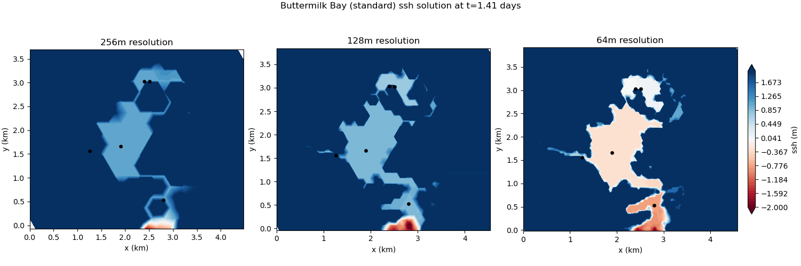
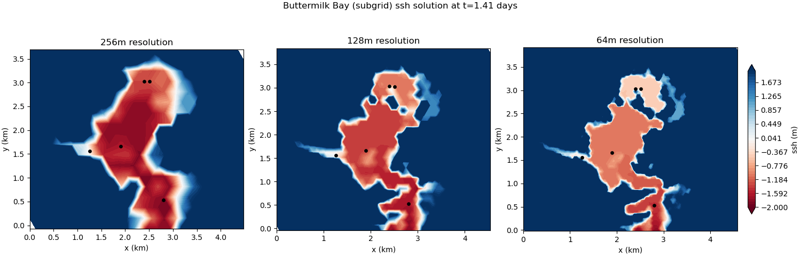
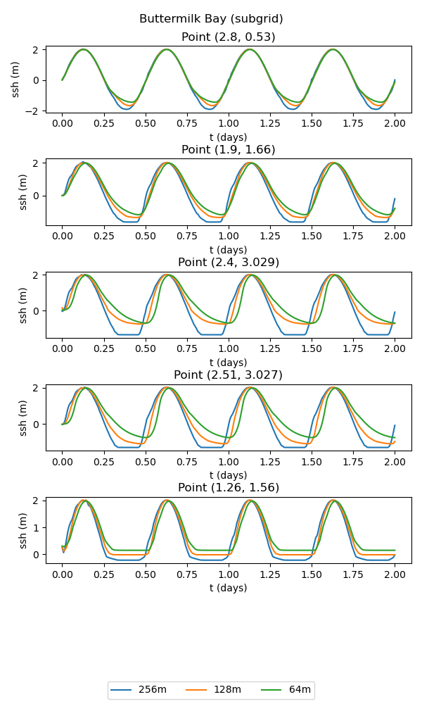

buttermilk_bay
The buttermilk_bay test group implements a realistic regional
simulation of tidally forced circulation in a multi-bay system
connected by narrow channels. The computational domain is
Buttermilk Bay, Massachusetts.
default
The default test case implements the Buttermilk Bay test case found in
Kennedy et al. (2019).
The tidal forcing is applied to a portion of the bottom boundary with an
amplitude of 2 m and a period of 0.5 days.
By default, the resolution is varied from 256 m to 64 m by doubling the resolution,
with the time step proportional to resolution.
The wetting/drying ramp feature (config_zero_drying_velocity_ramp = .true.)
is used by default for both the standard and subgrid versions of this test case.
The result of the viz step of the test case is plots of the solution at
different times, a time series at various points, and a convergence plot.
standard
The standard version of the test case uses the standard wetting and drying approach. At coarser resolutions, the bathymetric representation lacks sufficient detail to resolve the connectivity between the upper and lower bays. As a consequence, the results of the simulation are quite poor:
{kind=link}

subgrid
The subgrid version of the test case includes a subgrid correction scheme to incorporate the effects of subgrid scale bathymetric variations on the flow. This allows the small-scale connectivity between bays to be represented, leading to significant improvements over the standard wetting and drying approach:
 {kind=link}
{kind=link}
config options
The buttermilk_bay config options include:
# config options for buttermilk bay
[buttermilk_bay]
# dimensions of domain in x and y directions (m)
Lx = 4608
Ly = 4608
# a list of resolutions (m) to test
resolutions = 256, 128, 64
# time step per resolution (s/m), since dt is proportional to resolution
dt_per_m = 0.02
# the number of cells per core to aim for
goal_cells_per_core = 300
# the approximate maximum number of cells per core (the test will fail if too
# few cores are available)
max_cells_per_core = 3000
# config options for visualizing drying slope ouptut
[buttermilk_bay_viz]
# coordinates (in km) for timeseries plot
points = [2.8, 0.53], [1.9, 1.66], [2.4, 3.029], [2.51, 3.027], [1.26, 1.56]
# generate contour plots at a specified interval between output timesnaps
plot_interval = 1
resolutions
The default resolutions (in m) used in the test case are:
resolutions = 256, 128, 64
To alter the resolutions used in this test, you will need to create your own
config file (or add a buttermilk_bay section to a config file if you’re
already using one). The resolutions are a comma-separated list of the
resolution of the mesh in meters. If you specify a different list
before setting up buttermilk_bay, steps will be generated with the requested
resolutions. (If you alter resolutions in the test case’s config file in
the work directory, nothing will happen.) The resolution value along the values
of Lx and Ly are used to determine the number of cells in the x and y
directions used to generate the mesh.
time step
The time step for forward integration is determined by multiplying the
resolution by dt_per_m, so that coarser meshes have longer time steps.
You can alter this before setup (in a user config file) or before running the
test case (in the config file in the work directory).
cores
The number of cores (and the minimum) is proportional to the number of cells,
so that the number of cells per core is roughly constant. You can alter how
many cells are allocated to each core with goal_cells_per_core. You can
control the maximum number of cells that are allowed to be placed on a single
core (before the test case will fail) with max_cells_per_core. If there
aren’t enough processors to handle the finest resolution, you will see that
the step (and therefore the test case) has failed.
viz
The visualization step can be configured to plot the timeseries for an
arbitrary set of coordinates by setting points. By default, these
are set to the locations used in Kennedy et al. 2019. Also, the interval
between contour plot time snaps can be controlled with plot_interval.